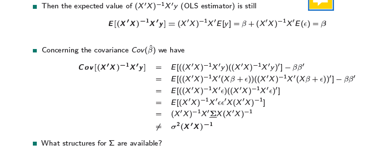
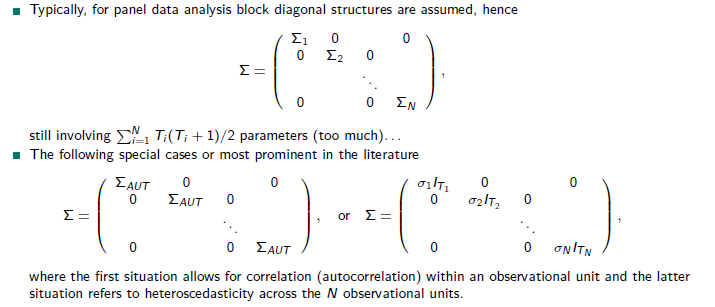
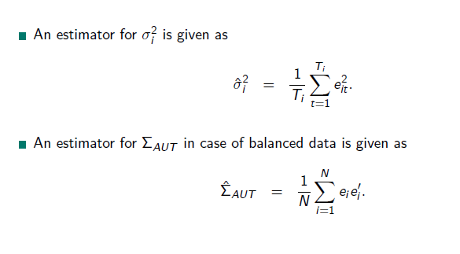

library(haven)
library(sandwich)
library(tidyverse) ##basic
library(stargazer) ##compare models
library(magrittr)
library(multigroup)
library(plm)
library(lme4)
library(lmtest)
library(lmerTest)
library(Matrix)
library(mitml)3 Panel Data
Recommended literature:
Greene, W. H. (2000). Econometric Analysis from 1990. 4th edition. International edition, New Jersey: Prentice Hall, 201-215.
3.1 Load libraries
3.2 Properties
Given a set of observational units \((i = 1, . . . ,N)\) you have measurements on variables at multiple time points \((t = 1, . . . ,T)\) Observational units can be individuals, households, firms, countries, schools, regions.
Dimension of panel data (important is important for properties of (parameter) estimators):
- \(N ≫ T\) (Micro panel data): only few time points but a lot of N per Time
- \(N ≡ T\) (Time-series-cross-section data)
- \(T ≫ N\) (Macro panel data): a lot time points but less N, i.e. investigate economic development of countries over the time
In general panel data allow for:
- modelling and thus controlling for individual specific heterogeneity
- avoiding aggregation bias
- identifying otherwise non-detectable effects (like intra-individual development, how certain units change over time)
- more data
- more information (more degrees of freedom are possible)
- more variability
- and less multicollinearity (with less data points there is often colinearity although in reality it is not and only artificial)
- (likely) higher statistical efficiently (more secure about what is estimated)
- modeling and analysis of dynamics and you can study causality because you have a time dimension in it (x takes place first and y takes place after)
Three kinds of variables arise in the context of panel data
- variables with variation over observational units and time \((X_{it})\) + socio-economic positions
- variables with variation only over
- observational units \((Z_i)\) + time constant variables like the birthday, ethnicity = variables with variation only over time, but not over
- observational units \((R_t)\) + external shocks, mega trends like regime, politics, floods, financial crisis
3.3 Advantages & Disadvantages of Panel data
- are very costly
- confront the analyst with selectivity (self-selectivity, non response, attrition)
- prospective data collection is possible, you can follow certain trends and variables in the actual time. Very advantageous, because not the problem of lying or remembering. BUT: dropouts, non response → self-selectiveness
- availability of actual data
- data collection might be difficult (coverage, collection costs, interview spacing, etc.)
- challenges for statistical analysis and modelling
Examples for individual or household panel data
- Socio Economic Panel (SOEP, DIW Berlin), since 1984
- National Longitudinal Survey of Youth (NLS, U.S. Bureau of Labor Statistics), cohorts born between 1980-84
- Panel Study of Income Dynamics (PSID, University Michigan), since 1968
- British Household Panel Survey (BHPS, ESRC & University of Essex), since 1991
Firm panel data
- Betriebspanel (IAB, N¨urnberg), since 1993
- Grunfelds Investmentdata (N = 11 U.S. firms), since 1950
Linked panel data
- Linked Employer-Employee-Dataset of the IAB
Regional or national panel data
- Penn World Tables (N = 167 countries), since 1950
- World Development Indicators Database (World Bank)
- Global Development Finance Database (World Bank)
- International Financial Statistics Database (IMF)
3.4 Selectivity and Attrition
Quality of panel data is depending on stability of participation.
Problem:
Deutsche Forschungsgemeinschaft (DFG) only gives money for gifts but not for incentives, BUT: for the response rate it is so important to compensate people with money for their time.
Also an ethical question:
How much money is appropriate. * can strenghten bias * can be understand as an insult, because people would rather do it voluntarily (example:refugees) * for rich people: give a donation in their name * based on experience you have to learn whom to give what * families with kids: give the kids some little gift
Panel mortality might lead to challenges in statistical inference since it likely implies selective (systematic) drop-outs. Information from previous waves can be used to control for this selectivity. This kind of correction refers to a selection correction as provided, for example, in the statistical framework of Heckman (1979) or inverse probability weighting.
- Verbeek, M., Nijman, T. (1992). Testing for selectivity bias in panel data models. International Economic Review, 681-703.
- Fitzgerald, J., Gottschalk, P., Moffitt, R. (1998): An Analysis of Sample Attrition in Panel Data,
- The Journal of Human Resources Sabine Zinn Hausman, J., Wise, D. (1979): Attrition ABQiaMs in Experimental and Pane8 l/ 5D6 ata, Econometrica
Example: Family Survey of Deutsches Jugendinstitut In the first wave (in 1988) 10043 families were surveyed. In the second wave (in 1994) 4997 of these families were again surveyed and in the third wave (in 2000) only 2002 remained (≈ 20%).
3.5 Balancedness
Balanced data structure: For each of the N observational units, data could be collected at each of the \(T\) measurement points, providing a number of \(NT\) observations.
Unbalanced data structure: For at least one observational unit, measurement on at least one occasion is missing, providing \(\sum^N_{i=1} T_i\) measurements (with \(T_i\) denoting the number of measurements per observational unit \(i\)).
Note that in principle all models and methods for balanced data are applicable to unbalanced data as well. However, in case of unbalanced panel data you have to clarify the causes why values are missing, i.e. to specify the process leading to the missing values.
3.6 Peculairities
Panel data require explicit statements regarding measurement consistency over time. Do you really measure the same thing over time?
Panel data are in general characterized as data sets with (at least) two indices, where these two indices refer to observational units and time, or hierarchical structures, e.g. students in classes, multiple firms in regions, etc.
In biostatistics & social sciences, mostly the term “longitudinal data” is used instead of “panel data”.
Time series and cross-sectional data can be thought of as special cases of panel data: * Time series: only one panel member over several measurement points + very common in econometrics like ARIMA, ARMA Models
- Cross section: many observational units (persons, firms, etc) at one time point
3.7 Exercise
Look into the Data 1: Panel data on wages in the U.S.
Read in:
DAT1 <- read_dta("data/2.Example1.dta")- How many observation for units and times:
nrow(DAT1)[1] 4165- How many time points?
length(unique(DAT1$time))[1] 7- How many units?
length(unique(DAT1$id))[1] 595Get a summary for all variables:
summary(DAT1) id time exp wks bluecol
Min. : 1 Min. :1 Min. : 1.00 Min. : 5.00 Min. :1.000
1st Qu.:149 1st Qu.:2 1st Qu.:11.00 1st Qu.:46.00 1st Qu.:1.000
Median :298 Median :4 Median :18.00 Median :48.00 Median :2.000
Mean :298 Mean :4 Mean :19.85 Mean :46.81 Mean :1.511
3rd Qu.:447 3rd Qu.:6 3rd Qu.:29.00 3rd Qu.:50.00 3rd Qu.:2.000
Max. :595 Max. :7 Max. :51.00 Max. :52.00 Max. :2.000
ind south smsa married
Min. :0.0000 Min. :1.00 Min. :1.000 Min. :1.000
1st Qu.:0.0000 1st Qu.:1.00 1st Qu.:1.000 1st Qu.:2.000
Median :0.0000 Median :1.00 Median :2.000 Median :2.000
Mean :0.3954 Mean :1.29 Mean :1.654 Mean :1.814
3rd Qu.:1.0000 3rd Qu.:2.00 3rd Qu.:2.000 3rd Qu.:2.000
Max. :1.0000 Max. :2.00 Max. :2.000 Max. :2.000
sex union ed black
Min. :1.000 Min. :1.000 Min. : 4.00 Min. :1.000
1st Qu.:1.000 1st Qu.:1.000 1st Qu.:12.00 1st Qu.:1.000
Median :1.000 Median :1.000 Median :12.00 Median :1.000
Mean :1.113 Mean :1.364 Mean :12.85 Mean :1.072
3rd Qu.:1.000 3rd Qu.:2.000 3rd Qu.:16.00 3rd Qu.:1.000
Max. :2.000 Max. :2.000 Max. :17.00 Max. :2.000
lwage
Min. :4.605
1st Qu.:6.395
Median :6.685
Mean :6.676
3rd Qu.:6.953
Max. :8.537 How many time points per id? Is it balanced?
#group the distinct time points by id
DAT1_sum <- DAT1 %>%
group_by(id) %>%
summarise(N = n_distinct(time))
# have all id 7 time points?
DAT1_sum$balanced <- DAT1_sum$N == 7
table(DAT1_sum$balanced)
TRUE
595 All 595 units in the data frame has 7 time points.
3.7.1 Look into the Data 2:
DAT2 <- read_dta("data/2.Example2.dta")- How many observation for units and times:
nrow(DAT2)[1] 1173- How many time points?
length(unique(DAT2$year))[1] 30- How many units?
length(unique(DAT2$state))[1] 46Is it balanced?
DAT2_sum <- DAT2 %>%
group_by(state) %>%
summarise(N = n_distinct(year))
# have all id 7 time points?
DAT2_sum$N [1] 24 25 22 26 25 27 28 23 23 21 27 26 26 29 24 29 26 25 27 24 28 23 25 27 24
[26] 21 24 26 25 25 22 26 23 24 27 27 26 27 27 26 25 28 27 29 25 29It ins not balanced, there is not data for all 30 years given for each state. In each state at least one data point for a year is missing.
3.8 Linear Panel Models
3.8.1 Notation and Assumptions
Based on a linear model:
\[ y= \alpha + \beta x + \epsilon \]
But the linear model is extended:
The \(y\) is the dependent variable and is a stacked vector → the observations of the individual is stacked, because it brackets the time points from 1 to NT →
\[ dim(y) = \sum^N_{i=1}T_i * 1 \]
\(X\) is a matrix of \(k\) conditioning variables
\[ dim(x) = \sum^N_{i=1}T_i * k \]
also \(\epsilon\), the vector of error terms is stacked
\[ dim(\epsilon) = \sum^N_{i=1}T_i * 1 \]
\(N_T\) are all observations in time of balanced structure
→ problem: the observations are not independent from each other
subsequently
\[ N_T = \sum^N_{i=1} T_i \]
The linear model is based on the following assumptions:
\(E[y] = X\beta\) and \(E[\epsilon]= 0\) (error is zero)
\(Cov [y] = \sigma^2 | =Cov(\epsilon) = E[\epsilon\epsilon']\) Covariances of \(y\) and \(\epsilon\) independent of each other
X is exogenous, not random and has a full rank → we can not be sure, what was first in a linear model and if it is not endogenous → entangle the X from Y and make sure it is not endogenous
Two situations yield an exogenous X:
- an experimental setup, where X is designed (full control of X),
- X is assumed to be the result of a random experiment (providing y)
3.8.2 Basic Framework for Panel Data
The basic framework for panel data is a regression of the form
\[ y_{it} = x′_{it}β + z′_iα + ϵ_{it} . \]
There are K regressors in \(x′_{it}\) , not including a constant term.
The heterogeneity or individual effect \(z′_iα\), where \(z′i\) contains a constant term and a set of individual or group specific variables, which may be
- observed (such as race, sex, location), or
- unobserved (such as family specific characteristics, individual heterogeneity in skill or preferences), → makes a lot of problems, because must be included in the model.
- you estimate one \(\beta\) for each individual effect, not for each individual.
As it stands, this model is a classical regression model. If \(z′i\) is observed for all individuals, then the entire model can be treated as an ordinary linear model and fit by least squares.
3.9 Pooled Regression
Three ways of dealing with panel data. Pooled regression is the easiest way. Pooled Regression is a homogeneous (or pooled) panel data model, because its assume that the model parameters are common across individuals. Fixed and random effects models are heterogeneous models, because they allow for any or all of the model parameters to vary across individuals. Fixed effects and random effects models are both examples of heterogeneous panel data models.
The panel regression formula without the \(z'i\) → because it is assumed, that there are no unobservable individual-specific effects. This is a strong assumption, because with this assumed, that all the observations within groups are independent of each other.
→ consequently Pooled OLS ignores time and individual characteristics and focuses only on the dependencies between the individual.
\[ y_{it} = α + x′_{it}β + ϵ_{it} , i = 1, . . . , t = 1, . . . ,T_i \]
The residuals depends on all the residual
\[ E[ϵ_{it} |x_i1, x_i2, . . . , ] = 0, \]
\[ Var [ϵ_{it} |x_i1, x_i1, . . . , ] = σ^2_ϵ \]
\[ Cov[ϵ_{it}ϵ_{js} |x_i1, x_i1, . . . , x_{iTj} ] = 0, \]
if \(i \not= j\) or \(t \not=s\)
3.9.1 Specifing the estimation model
In this form, if the remaining assumptions of the classical linear model are met (zero conditional mean of \(ϵ_{it}\) , homoscedasticity (residuals are over time and the individuals are the same or very similar), independence across observations \(i\) , and strict exogenity of \(x′it)\), then OLS is the efficient estimator and inference can reliably proceed along the linear model. However, the crux of panel data is that all these assumptions in combination are unlikely to be met.
The question is what can be expected of the estimator when the heterogeneity does differ across individuals?
We have to allow for heteroscedasticity, because data is often not fitting to homoscedasticity.
- Vary the classical assumptions of the linear regression model as follows and in doing so allow for heteroscedasticity and/ or autocorrelation.
\[ E[\epsilon \epsilon']= \sum \not= \sigma^2I \]

At the end: an unbiased estimator for \(\beta\), which is a fixed estimator! The only entrance of randomness is the \(y\).
What is the issue coming, when you gave to allow for it?
\(\beta\) we get a unbiased estimator with fixed effects! It is a fixed estimator! The only entrance of randomness is the y.
The problem is not the \(\beta\), the problem is the covariance \(Cov(\hat{β})\). \(\sigma^2\) can’t be used to give the quality of the estimator → because we have heteroscedasticity from the individuals and in time, so we cannot get the right standard errors for the estimator, because of the error term. → we don’t access the right variance in population, because the variance is influenced by parameters in units AND time!
Problem: everything depends on everything!
The next steps will lead us to better compute the covariance:
Covariance matrix Note that \(Σ\) is of dimension \(NT × NT\) thus is a positive definite covariance matrix involving \(NT (NT + 1)/2\) parameters.
- So for 1000 units and 5 time points, we would need to estimate 2500 parameters. NOT feasible!
Which form is suited or necessary depends on the data structure?
- instead: for panel data analysis block diagonal structures)
→ I assume, that across individuals in time is no correlation, it is assumed to be zero. Like in multi-level models, I assume that only variables in one individual (unit) separately from another individual (unit) are varying in time.
→ This is an estimator for the covariance matrix:


autocorrelation: the estimator is an dyadic products.
Now, we come to the formulas, we need:
What does it imply?
OLS Pooled Regression treats the panel data as a single large dataset and estimates a single regression model for all observations. It ignores the individual-specific effects and assumes that the relationship between the variables is the same for all individuals. This approach does not account for the potential heterogeneity across individuals. It does not allow for intercept or slope differences among individuals. A common relationship for all individuals is assumed.
3.9.2 Robust Estimation using Group Means
Between Model or Group Means Model → a group is one individual with all time points! You can also reverse the logic and group the time points over individuals.
By making the averaging, you are in a heteroscedasticity setting, because you kicked out the auto correlation → then the White estimator is a robust estimator for robust standard errors:
We have a uncertainty on the cluster level we did not have before.
A group mean regression estimates separate regression models for each group or individual in the panel over time. It takes into account the individual-specific effects by including group-specific intercepts or fixed effects in the regression model. This approach allows for heterogeneity across individuals and captures the differences in the relationship between the variables for each group (individuals).
In sum: It allows for individual-specific effects and captures heterogeneity across groups or individuals in the data.
3.9.3 Example Data
Is build in R
There are differences in the estimates. Explanation for that follows in the excerise
3.9.4 Exercise
- Replicate this the table from ?fig-compare
#Load data
data(Wages)
DAT <- Wages
# add the squared experience variable
DAT$expSq <- DAT$exp^2
#add an ID
DAT$id <- rep(1:595, each=7)
# add a time point
DAT$time <- rep(1:7, 595)A panel of 595 individuals from 1976 to 1982, taken from the Panel Study of Income Dynamics (PSID).
Variables: log wage (lwage);
years of full time work experience (exp); weeks worked (wks); 1 if blue-collar occupation, 0 if not (bluecol); 1 if the individual works in a manufactural industry, 0 if not (ind); 1 if the individual resides in the South, 0 if not (south); 1 if the individual resides in an metropolitan area (smsa), 0 if not; 1 if individual is married, 0 if not (married); 1 if the individual wage is set by a union contract, 0 if not (union); years of education (ed); 1 if the individual is female, 0 if not (sex); 1 if the individual is black, 0 if not (black)
Create a model like the one from Cornwell and Rupert (1988):
Pooled OLS Regression {#sec-ex.pool}
OLS can be used to pool observations of the same individual recorded at different time points. However, observations of the same individual are then treated as if they originate from other individuals. So a typical linear regression should lead to the same results as a pooled OLS regression
modL <- lm(lwage ~ exp + expSq + wks + bluecol + ind + south + smsa + married + sex + union + ed + black, data=DAT)
summary(modL)
Call:
lm(formula = lwage ~ exp + expSq + wks + bluecol + ind + south +
smsa + married + sex + union + ed + black, data = DAT)
Residuals:
Min 1Q Median 3Q Max
-2.18965 -0.23536 -0.00988 0.22906 2.08738
Coefficients:
Estimate Std. Error t value Pr(>|t|)
(Intercept) 5.251e+00 7.129e-02 73.662 < 2e-16 ***
exp 4.010e-02 2.159e-03 18.574 < 2e-16 ***
expSq -6.734e-04 4.744e-05 -14.193 < 2e-16 ***
wks 4.216e-03 1.081e-03 3.899 9.82e-05 ***
bluecolyes -1.400e-01 1.466e-02 -9.553 < 2e-16 ***
ind 4.679e-02 1.179e-02 3.967 7.39e-05 ***
southyes -5.564e-02 1.253e-02 -4.441 9.17e-06 ***
smsayes 1.517e-01 1.207e-02 12.567 < 2e-16 ***
marriedyes 4.845e-02 2.057e-02 2.355 0.0185 *
sexfemale -3.678e-01 2.510e-02 -14.655 < 2e-16 ***
unionyes 9.263e-02 1.280e-02 7.237 5.45e-13 ***
ed 5.670e-02 2.613e-03 21.702 < 2e-16 ***
blackyes -1.669e-01 2.204e-02 -7.574 4.45e-14 ***
---
Signif. codes: 0 '***' 0.001 '**' 0.01 '*' 0.05 '.' 0.1 ' ' 1
Residual standard error: 0.3494 on 4152 degrees of freedom
Multiple R-squared: 0.4286, Adjusted R-squared: 0.427
F-statistic: 259.5 on 12 and 4152 DF, p-value: < 2.2e-16Or alternatively: In this model we get the robust panel standard errors.
modO <- plm(lwage ~ exp + expSq + wks + bluecol + ind + south + smsa + married + sex + union + ed + black, data=DAT,
model="pooling", index = c("id", "time"))
summary(modO, vcov=vcovHC(modO, method="arellano")) Pooling Model
Note: Coefficient variance-covariance matrix supplied: vcovHC(modO, method = "arellano")
Call:
plm(formula = lwage ~ exp + expSq + wks + bluecol + ind + south +
smsa + married + sex + union + ed + black, data = DAT, model = "pooling",
index = c("id", "time"))
Balanced Panel: n = 595, T = 7, N = 4165
Residuals:
Min. 1st Qu. Median 3rd Qu. Max.
-2.1896534 -0.2353558 -0.0098805 0.2290643 2.0873770
Coefficients:
Estimate Std. Error t-value Pr(>|t|)
(Intercept) 5.2511e+00 1.2326e-01 42.6005 < 2.2e-16 ***
exp 4.0105e-02 4.0671e-03 9.8607 < 2.2e-16 ***
expSq -6.7338e-04 9.1106e-05 -7.3911 1.751e-13 ***
wks 4.2161e-03 1.5384e-03 2.7405 0.0061609 **
bluecolyes -1.4001e-01 2.7181e-02 -5.1511 2.710e-07 ***
ind 4.6789e-02 2.3609e-02 1.9818 0.0475634 *
southyes -5.5637e-02 2.6100e-02 -2.1317 0.0330876 *
smsayes 1.5167e-01 2.4048e-02 6.3069 3.143e-10 ***
marriedyes 4.8449e-02 4.0850e-02 1.1860 0.2356910
sexfemale -3.6779e-01 4.5470e-02 -8.0885 7.858e-16 ***
unionyes 9.2627e-02 2.3618e-02 3.9219 8.927e-05 ***
ed 5.6704e-02 5.5519e-03 10.2135 < 2.2e-16 ***
blackyes -1.6694e-01 4.4228e-02 -3.7745 0.0001626 ***
---
Signif. codes: 0 '***' 0.001 '**' 0.01 '*' 0.05 '.' 0.1 ' ' 1
Total Sum of Squares: 886.9
Residual Sum of Squares: 506.77
R-Squared: 0.42861
Adj. R-Squared: 0.42696
F-statistic: 66.2142 on 12 and 594 DF, p-value: < 2.22e-16#Check if same
stargazer::stargazer(modO,modL, type="text", out = "ml.html")
========================================================
Dependent variable:
----------------------------
lwage
panel OLS
linear
(1) (2)
--------------------------------------------------------
exp 0.040*** 0.040***
(0.002) (0.002)
expSq -0.001*** -0.001***
(0.00005) (0.00005)
wks 0.004*** 0.004***
(0.001) (0.001)
bluecolyes -0.140*** -0.140***
(0.015) (0.015)
ind 0.047*** 0.047***
(0.012) (0.012)
southyes -0.056*** -0.056***
(0.013) (0.013)
smsayes 0.152*** 0.152***
(0.012) (0.012)
marriedyes 0.048** 0.048**
(0.021) (0.021)
sexfemale -0.368*** -0.368***
(0.025) (0.025)
unionyes 0.093*** 0.093***
(0.013) (0.013)
ed 0.057*** 0.057***
(0.003) (0.003)
blackyes -0.167*** -0.167***
(0.022) (0.022)
Constant 5.251*** 5.251***
(0.071) (0.071)
--------------------------------------------------------
Observations 4,165 4,165
R2 0.429 0.429
Adjusted R2 0.427 0.427
Residual Std. Error 0.349 (df = 4152)
F Statistic (df = 12; 4152) 259.544*** 259.544***
========================================================
Note: *p<0.1; **p<0.05; ***p<0.01Leads to the same results.
Check also for standard errors:
modL_robust_se <- as.vector(summary(modL,robust = T)$coefficients[,"Std. Error"])
modO_robust_se <- as.vector(summary(modO,robust = T)$coefficients[,"Std. Error"])
data.frame(modL_robust_se,modO_robust_se) modL_robust_se modO_robust_se
1 7.128679e-02 7.128679e-02
2 2.159175e-03 2.159175e-03
3 4.744313e-05 4.744313e-05
4 1.081366e-03 1.081366e-03
5 1.465670e-02 1.465670e-02
6 1.179350e-02 1.179350e-02
7 1.252710e-02 1.252710e-02
8 1.206870e-02 1.206870e-02
9 2.056867e-02 2.056867e-02
10 2.509705e-02 2.509705e-02
11 1.279951e-02 1.279951e-02
12 2.612826e-03 2.612826e-03
13 2.204219e-02 2.204219e-02Group Mean pooled regression
modG <- plm(lwage ~ exp + expSq + wks + bluecol + ind + south + smsa + married + sex + union + ed + black, data=DAT,
model="between", #choose this argument for using group means of individuals
index = c("id", "time"))
summary(modG) Oneway (individual) effect Between Model
Call:
plm(formula = lwage ~ exp + expSq + wks + bluecol + ind + south +
smsa + married + sex + union + ed + black, data = DAT, model = "between",
index = c("id", "time"))
Balanced Panel: n = 595, T = 7, N = 4165
Observations used in estimation: 595
Residuals:
Min. 1st Qu. Median 3rd Qu. Max.
-0.8268412 -0.1816744 0.0039229 0.1867997 0.7169636
Coefficients:
Estimate Std. Error t-value Pr(>|t|)
(Intercept) 5.12143093 0.20424937 25.0744 < 2.2e-16 ***
exp 0.03190113 0.00477687 6.6783 5.656e-11 ***
expSq -0.00056563 0.00010485 -5.3945 1.001e-07 ***
wks 0.00918910 0.00360440 2.5494 0.0110457 *
bluecolyes -0.16761971 0.03381666 -4.9567 9.416e-07 ***
ind 0.05791753 0.02554122 2.2676 0.0237187 *
southyes -0.05705355 0.02596784 -2.1971 0.0284078 *
smsayes 0.17577535 0.02575680 6.8244 2.222e-11 ***
marriedyes 0.11478166 0.04769750 2.4065 0.0164190 *
sexfemale -0.31706119 0.05472529 -5.7937 1.128e-08 ***
unionyes 0.10906865 0.02923185 3.7312 0.0002093 ***
ed 0.05143597 0.00555456 9.2601 < 2.2e-16 ***
blackyes -0.15780429 0.04501188 -3.5058 0.0004902 ***
---
Signif. codes: 0 '***' 0.001 '**' 0.01 '*' 0.05 '.' 0.1 ' ' 1
Total Sum of Squares: 92.322
Residual Sum of Squares: 42.073
R-Squared: 0.54428
Adj. R-Squared: 0.53489
F-statistic: 57.926 on 12 and 582 DF, p-value: < 2.22e-16Compare:
stargazer(modL, modG, type="text", out = "ml.html")
=======================================================================
Dependent variable:
---------------------------------------------------
lwage
OLS panel
linear
(1) (2)
-----------------------------------------------------------------------
exp 0.040*** 0.032***
(0.002) (0.005)
expSq -0.001*** -0.001***
(0.00005) (0.0001)
wks 0.004*** 0.009**
(0.001) (0.004)
bluecolyes -0.140*** -0.168***
(0.015) (0.034)
ind 0.047*** 0.058**
(0.012) (0.026)
southyes -0.056*** -0.057**
(0.013) (0.026)
smsayes 0.152*** 0.176***
(0.012) (0.026)
marriedyes 0.048** 0.115**
(0.021) (0.048)
sexfemale -0.368*** -0.317***
(0.025) (0.055)
unionyes 0.093*** 0.109***
(0.013) (0.029)
ed 0.057*** 0.051***
(0.003) (0.006)
blackyes -0.167*** -0.158***
(0.022) (0.045)
Constant 5.251*** 5.121***
(0.071) (0.204)
-----------------------------------------------------------------------
Observations 4,165 595
R2 0.429 0.544
Adjusted R2 0.427 0.535
Residual Std. Error 0.349 (df = 4152)
F Statistic 259.544*** (df = 12; 4152) 57.926*** (df = 12; 582)
=======================================================================
Note: *p<0.1; **p<0.05; ***p<0.01In both models I have included all explanatory and control variables and regress them from the natural log in Wage for all units.
In both models all included variables are significant and have an effect in the same direction.
Our explanatory variable we are interested in is the return to education, which is grasped by the variable Ed. The effect of this variable is quite similar in both models, but in the second one a bit smaller.
Variables with similar estimates and robust standard errors in both models:
- exp - years full of work experience
- expSq - years full of work experience squared
- bluecolyes - in blue collar occupation
- southyes - reside in south
- smsa - resides in metropolian area
- union - part of a union
- black - if a person is black
Variables with different estimates and robust standard errors in both models:
- wks - weeks of work, the estimate in the second model is more than twice as high than in the first
- married- if a person is married, the estimate in the second model is more than twice as high than in the first.
Why is this the case?
- The OLS and the Panel Robust Standard error are for considering time points variation for one individual (more appropriate within level) → its accounting for period heteroscedasticity
- The group mean regression and the White Robust S.E. are for considering individual variance across time (within level variation comparing between variation) → accounting for cross-sectional heteroscedasticity.
- Marriage and weeks worked are indicators, that vary over time. The group mean estimator account for cross-sectional heteroscedasticity, not for periodical. But effects of worked week and marriage are changing with time. So when you make for example a group effect of people who are married , they earn way more than people who are never been married. But in this group model different time effects are not included and it can be, that in the beginning of a marriage the effect is small and grows over time, because you get older and more experienced etc., too. So the time being married and the differences in the impact of marriage on earning are not included.
- On the other hand the modG cancels autocorrelation out and allows for individual specific variations.
ANOVA for investigating variance Depending on the model, we have different estimators. Where comes the differences from? From the individual or the time level? Therefore, we do an ANOVA.
We fit first e linear regression for the individual:
fit <- lm(lwage~id, data=DAT)
anova(fit)Analysis of Variance Table
Response: lwage
Df Sum Sq Mean Sq F value Pr(>F)
id 1 7.07 7.0655 33.431 7.927e-09 ***
Residuals 4163 879.84 0.2113
---
Signif. codes: 0 '***' 0.001 '**' 0.01 '*' 0.05 '.' 0.1 ' ' 1The ANOVA tells us that there is a significant difference in the means of an individual over time.
The total sum of squares (the total variation across all units) is 886.91.
It shows the within variation with the residuals of the individual (the mean squared error of the residuals estimates the variation of the errors around the group means, the MSE)
within <- anova(fit)["Residuals", "Mean Sq"]; within[1] 0.2113475What differs, when a variable of the individual level changes? I.e. what changes for the individual, when he/she gets married?
Between variance with individuals (estimates the varianceof the different group or in this case means for the individuals around the grand mean):
between <- anova(fit)["id", "Mean Sq"]; between[1] 7.065452So this gives us an insight, i. e. what differs for the group of individuals that is married in comparison to the group that is not married?
Next step: What variance is there all over?
total <- between + within; total[1] 7.276799Because the variance in the mean squared for ID is much larger than the mean squared error, the F-ratio is not nearly close to 1 and we have a signifcant value to reject the null hypothesis, that there are no differences in means between the indivduals.
Steps described generally:
## anov <- aov(lwage~id+Error(id),data=DAT)
## summary(anov)
## grandmean <- as.vector(anov$"(Intercept)"[[1]][1])
## msq_with <- summary(anov)$"Error: Within"[[1]]$"Mean Sq" ## Mean Squared Error for within group variance (for group = individuals)
## dfId <- summary(anov)$"Error: id"[[1]]$"Df"
## dfWithin <- summary(anov)$"Error: Within"[[1]]$"Df"
## msq_bet <- summary(anov)$"Error: id"[[1]]$"Mean Sq" ## Mean Squared Error for between group variance (for group = individuals)
## between <- (msq_bet-msq_with)/((dfWithin/(dfId+1))+1) ## (S1^2-S2^2)/J
## total <- msq_bet + msq_with
## msq_with ## within ok
## msq_bet ## between ok
## total 3.10 Fixed Effects Model
No random component added to \(\beta\). The fixed effects model arises from the assumption that omitted effects, \(c_i\) , in the general model
\[ y_{it} = x′_{it}β + c_i + ϵ_{it} \]
are correlated with the included variables, i.e.
\[ E[c_i |X_i ] = h(X_i). \]
Assumption: \(C_i\), the “unobservable” effect of omitted effects are correlated to the observable and included variables.
Unobservable effects could be motivations, personality traits.
Example: The chance of marriage is not only explained by the x, but dependent on the x conditioned by c.
Since the conditional means is the same in every period, it gives the unobserved effect a home, because it is conditional over time and dependent on the observed variables.
\[ y_{it} = x′_{it}β + h(X_i ) + ϵ_{it} + [c_i − h(X_i )]\\ = x′_{it}β + α_i + ϵ_{it} + [c_i − h(X_i)]. \]
$ h(X_i )$ is the unobserved, what I observed on the other variables → this is the fixed effect.
By design the bracket term is uncorrelated with Xi , thus we may absorb it in the disturbance:
\[ y_{it} = x′_{it}β + α_i + ϵ_{it} . \]
A further assumption is that \(Var (ci |Xi )\) is constant. Thus the model above is a classical linear regression model.
→ what we have in conclusion is a linear model.
The fixed effects formulation implies that differences across groups can be captures in differences in the constant term. Each \(α_i\) is treated as an unknown parameter to be estimated.
The major shortcoming of the fixed effects approach is that any time-invariant variable in the set of explanatory variables will mimic the individual specific constant term.
That is, the fixed effects formulation of the model absorbs the all time-invariant terms in the regression in \(α_i\) .
Thus the coefficient on the time-invariant variables cannot be estimated. (Hence, fixed effects models cannot be used to investigate time-invariant causes of the dependent variables.)
This lack of identification is the price of robustness of the specification to unmeasured correlation between the omitted effects and the included variables.
→ it is not possible to get an estimate for constant variables over time.
If you want to compare groups, use group means: Then, you can infer, what a belonging to a certain gender, an age cohort, an occupation has on the individual or on the group.
The fixed effects model is useful to investigate dynamics: Here, you get rid of all constant factors in holding them fixed. Your focus here is to estimate differences in time, like enter a new job, get married, or external shocks like inflation.
In sum, the fixed effect model is useful whenever you are only interested in analyzing the impact of variables that vary over time (the time effects).
The fixed-effects model controls for all time-invariant differences between the individuals: estimated coefficients cannot be biased because of omitted time-invariant characteristics. Technically, time-invariant characteristics of the individuals are perfectly collinear with the group dummies.
Fixed effects models serve to study the causes of changes within a group/person.A time-invariant characteristic cannot cause such a change, because it is constant for each group/person.
Important: You cannot control for everything! So, you must assume, that the constants are not changing over time.
3.10.1 Least suqares dummy variable model (LSDV)
BUT: you can reduce the \(\alpha\) estimates:

Because too many estimates:
3.10.2 Partioned Regression

(The Frisch-Waugh-Lovell theorem states that) in this regression the residuals \(\hatϵ\) and the OLS estimate \(\hatβ_2\) will be numerically identical to the residuals and the OLS estimate for \(β_2\) in the following regression: \[ M_1y = M_1X_2β_2 + η \] where \(M_1\) is the annihilator matrix for the regressors \(X_1\). The theorem states that having a regression with a constant and another regressor is equivalent to subtracting the means from the dependent variable and the regressor and then running the regression for the demeaned variables but without the constant term.
For each of the observed points you subtract the mean, so \(y+TN - \overline{y}_N\)
→ you standardized your \(y\) over the time. Also often called demeaned regression. You get rid of the part of the model you are not interesting in. You transform your y into another y, which is free from the constants.
3.10.3 Consistency if partitioned regression estimator
Thus, as long as the data is well behaving and number \(N\) of individual units is large, we can expect consistency of \(\hatβ\). However, this is mostly not true for \(\hatα_i\) : if \(T\) is small, \(\hatα_i\) is an inconsistent estimator of \(α_i\) (this is the individual effect).
So you should test for \(\hatα_i\)
Example for \(\beta\) :
- what is the effect of entering marriage on wages?
- how large is the new task of taking informal care for relatives or intensify your care, what does it make with the well-being?
Example for \(\alpha\) :
- personality traits in the effect of entering marriage on wages?
- intrinsic motivation in taking care for relatives or intensify your care
→ \(\alpha\) is not what we are interesting in, but it does play a role, specific for each individual, not a parameter for a feature like \(\beta\)!
3.10.4 Testing with the F-Test

3.10.5 Exercise
Least squares dummy variable model
1.Estimate a fixed effects model with lwage as dependent variable and the regressors described before (where possible). For that purpose, use the LSDV approach. Mind that in this model there is no grand mean but group specific intercepts. In R, you omit the grand mean from estimation by adding ‘-1’ to the right side of the regression equation and you get group specific effects by defining the related group identifiers as factors ‘as.factor()’.
# use the same explanatory and control variables as before but exclude all time invariant factors. This is, because they are mimiced by the dummies for id.
fixed_lsdv <- lm(lwage ~ as.factor(id) #include the group specific effect
+ exp + expSq + wks + bluecol + ind + south + smsa + married + union
-1, #subtract the grand mean from the estimation
data=DAT)
summary(fixed_lsdv) the summary(fixed_lsdv) gives you all estimates for each individual (in this data set 595 individuals) and estimates for each explanatory and control variable. A look in taht output shows, that all the estimates for the ids are significant and ranges from 3 to over 6.
But we are not interested in the data overfitting estimates for each individual, we are interested in the other variables.
When we want to have only the coefficients, this code is useful:
fixed_lsdv$coefficients[-c(1:595)] exp expSq wks bluecolyes ind
0.1132082750 -0.0004183513 0.0008359460 -0.0214764983 0.0192101222
southyes smsayes marriedyes unionyes
-0.0018611924 -0.0424691528 -0.0297258386 0.0327848598 Compared to the group mean model and the pooled regression the estimates have changed a lot. This is, because the LSDV model is only capable of modelling dynamics, so how an individual with certain heterogenity is changing over time because of different variables. The OLS regression does not account for individual specific effects and the group mean not for individual changings over time. It depends on the question and the theoretical framework, which model is appropriate to get the right estimates. With the estimates of the fixed effect model we analyze dynamics for individuals. So: What does marriage have for an effect on the wage of an individual?
Because many \(\alpha\) terms, if \(N\) gets larger, not feasible (so I have spare to print the summary of that model)
partioned regression / within estimator
fixed_w <- plm(lwage ~ exp + expSq + wks + bluecol + ind + south + smsa + married + union, data=DAT, model="within", index = c("id", "time"))
summary(fixed_w) Oneway (individual) effect Within Model
Call:
plm(formula = lwage ~ exp + expSq + wks + bluecol + ind + south +
smsa + married + union, data = DAT, model = "within", index = c("id",
"time"))
Balanced Panel: n = 595, T = 7, N = 4165
Residuals:
Min. 1st Qu. Median 3rd Qu. Max.
-1.8122282 -0.0519417 0.0038855 0.0614706 1.9434306
Coefficients:
Estimate Std. Error t-value Pr(>|t|)
exp 1.1321e-01 2.4710e-03 45.8141 < 2.2e-16 ***
expSq -4.1835e-04 5.4595e-05 -7.6629 2.329e-14 ***
wks 8.3595e-04 5.9967e-04 1.3940 0.16340
bluecolyes -2.1476e-02 1.3784e-02 -1.5581 0.11930
ind 1.9210e-02 1.5446e-02 1.2437 0.21370
southyes -1.8612e-03 3.4299e-02 -0.0543 0.95673
smsayes -4.2469e-02 1.9428e-02 -2.1859 0.02889 *
marriedyes -2.9726e-02 1.8984e-02 -1.5659 0.11747
unionyes 3.2785e-02 1.4923e-02 2.1970 0.02809 *
---
Signif. codes: 0 '***' 0.001 '**' 0.01 '*' 0.05 '.' 0.1 ' ' 1
Total Sum of Squares: 240.65
Residual Sum of Squares: 82.267
R-Squared: 0.65815
Adj. R-Squared: 0.60026
F-statistic: 761.751 on 9 and 3561 DF, p-value: < 2.22e-16The results for the least squares dummy regression and the partioned regression are the same. Like the LSDV the partioned regression also estimates the effect of the dynamic for each individual.
pooled model als a null model
While the partioned regression take individual specifics and time dynamics into account, the pooled one does not and only account for heteroscedasticity of periods. Therefore, we should test, what the better model is:
pooled <- lm(lwage ~ exp + expSq + bluecol + ind + south + smsa + married + sex + union + ed + black, data=DAT)To compare this model to the other, we use the function pFtest. This function is a F Test for individual and time effects and is written for the comparison of pooled and partioned regression models.
# test on common significance of dummies for groups/ individuals
pFtest(fixed_w, #first argument has to be the fixed model
pooled) #second argument the pooled one
F test for individual effects
data: lwage ~ exp + expSq + wks + bluecol + ind + south + smsa + married + ...
F = 31.174, df1 = 592, df2 = 3561, p-value < 2.2e-16
alternative hypothesis: significant effectsWith an F of 31 and this number of degrees of freedom, the F test for individual effects is significant. We must reject the null hypothesis, that there are no fixed individual effects.
Regarding the F-test in which a pooled regression and a fixed effect model are compared to each other, we should go with an fixed effect model.
The fixed effects model models dynamics over time. The unobserved factors are not captured by the control variables, “the something in the back”. In the fixed effects model, though, the something in the back is conditioned by the observed variables, like assumed in the fixed effects model.
3.11 Random Effects Model
Note: In the following we learn typical problems with random effects models with panel data. This problems are also true multi-level random models!
3.11.1 Ideas
The fixed effects model allows the unobserved individual effects to be correlated with the included variables.
As a consequence, the differences between units are strictly modeled as parametric shifts of the regression function. → for people who are not in the sample, we cannot predict for! This model might be viewed as applying only to the cross-sectional units in the study, not to additional ones outside the sample.
Main idea for random effects models: The individual-specific effect is a random variable is uncorrelated with the explanatory variables.
The variation across entities is assumed to be random and uncorrelated to the predictor or independent variables in the model.
3.11.2 Model specification
If \(N\) is large, one may view the ‘effects’ as unobserved random variables and not as incidental parameters: random effects (RE). The model becomes more ‘parsimonious’, as it has less parameter
- so random effects models are attractive for large \(N\) and small \(T\)
- Assumption: If the individual effects are strictly uncorrelated with the regressors, then it might be appropriate to model the individual specific constant terms as randomly distributed across cross-sectional units.
Short explanation of the concept:
- ( If individual effects are strictly uncorrelated with the regressors, it may be appropriate to model the individual specific constant terms as randomly distributed across cross-sectional units. This view would be appropriate if we believe that sampled cross-sectional units were drawn from a large population.
- If you have reason to believe that differences across entities have some influence on your dependent variable, then you should use random effects. In a random effects model, you need to specify those individual characteristics that may or may not influence the predictor variables. The problem with this is that data on some variables (i.e., individual characteristics such as innate ability) may not be available, hence leading to omitted variable bias in the model.
- An advantage of using random effects method is that you can include time invariant variables (e.g., geographical contiguity, distance between states) in your model. In the fixed effects model, these variables are absorbed by the intercept.
Another advantage: The random effects model elaborates on the fixed effects model by recognizing that, since the individuals in the panel are randomly selected, their characteristics, measured by the intercept \(β_{1i}\) should also be random.
The payoff to this form is that it greatly reduces the number of parameters to be estimated.
!The cost is the possibility of inconsistent estimates, should the assumption turn out to be inappropriate! → if there is correlation with unobserved part and the variables included in the model, you get wrong estimates!
the unobserved individual heterogeneity can be assumed to be uncorrelated with the included variables, then the model may be formulated as
\[ \\ y_{it} = x′_{it}β + E[z′iα] + {z′iα − E[z′ iα]} + ϵ_{it} \\ = x′_{it}β + (α + u_i ) + ϵ_{it} \\ \]
where there are \(K\) regressors including a constant and the single constant term is the mean of the unobserved heterogeneity, \(E[z′iα]\). In a random effects model I assume that \(α\) is the same for everybody, so all individuals get the same intercept, I assume everybody is the same.
The shaky part is \(u_i\), the part hold responsible for the variance. It is this: \(\{z′iα] − E[z′iα]\}\).
In this case, it is not \(\tau^2\), it is \(\sigma^2\) that explain the variance of the group deviation, the \(u_i\).
The component \(u_i\) is the random heterogeneity specific to the with observation and is constant through time. So you don’t have to estimate for each individual a certain constant parameter. BUT: This comes with a price!
3.11.3 Least Squares Estimation
3.11.4 Generalized Least Squares
Only true for random effects model!
weighting the data in the estimating procedure, making full use of the data, because between and within-group is regarded in this model.
Testing Random Effects with the Lagrange multipliert test:
$ H_0: _u = 0$ (or \(Corr(w_{it, W_is})= 0)\) \(H_1: \sigma^2_u \not= 0\)
Under the null hypothesis, LM is distributed as chi-squared with one degree of freedom.
3.11.5 Exercise
- Estimate a random effects model.
random <- plm(lwage ~ exp + expSq + wks + bluecol + ind + south + smsa + married + sex + union + ed + black,
data = DAT, model = "random", # specify model
random.method = "amemiya", #stands for the Amemiya-MacCurdy estimation
index #use this method
= c("id", "time"), effect="individual") # define the effect, do you think its the individual or time?
summary(random)Oneway (individual) effect Random Effect Model
(Amemiya's transformation)
Call:
plm(formula = lwage ~ exp + expSq + wks + bluecol + ind + south +
smsa + married + sex + union + ed + black, data = DAT, effect = "individual",
model = "random", random.method = "amemiya", index = c("id",
"time"))
Balanced Panel: n = 595, T = 7, N = 4165
Effects:
var std.dev share
idiosyncratic 0.02304 0.15180 0.021
individual 1.06368 1.03135 0.979
theta: 0.9445
Residuals:
Min. 1st Qu. Median 3rd Qu. Max.
-1.9129800 -0.0679600 0.0073847 0.0742140 2.0130032
Coefficients:
Estimate Std. Error z-value Pr(>|z|)
(Intercept) 3.0303e+00 2.0907e-01 14.4944 < 2e-16 ***
exp 1.0915e-01 2.4055e-03 45.3760 < 2e-16 ***
expSq -4.8419e-04 5.3138e-05 -9.1121 < 2e-16 ***
wks 8.3771e-04 5.8933e-04 1.4215 0.15518
bluecolyes -2.3848e-02 1.3477e-02 -1.7695 0.07680 .
ind 1.5450e-02 1.5006e-02 1.0296 0.30320
southyes 4.1898e-03 3.1740e-02 0.1320 0.89498
smsayes -4.6397e-02 1.8697e-02 -2.4815 0.01308 *
marriedyes -3.7679e-02 1.8567e-02 -2.0294 0.04242 *
sexfemale -1.6102e-01 1.3613e-01 -1.1829 0.23686
unionyes 3.6777e-02 1.4522e-02 2.5325 0.01132 *
ed 1.3847e-01 1.5234e-02 9.0895 < 2e-16 ***
blackyes -2.6570e-01 1.6615e-01 -1.5991 0.10979
---
Signif. codes: 0 '***' 0.001 '**' 0.01 '*' 0.05 '.' 0.1 ' ' 1
Total Sum of Squares: 242.65
Residual Sum of Squares: 92.859
R-Squared: 0.61731
Adj. R-Squared: 0.6162
Chisq: 6697.38 on 12 DF, p-value: < 2.22e-16In the random effects model a single and constant term for the unobserved randomness is computed, so we have an intercept in here and can integrate time invariant variables like sex and if a person is black or not.
Alternatively to the function plm we can use also the lm(), the results differs slightly from each other:
# create a multilinear mixed model
random_ml <- lmer(lwage ~ exp + expSq + wks + bluecol + ind + south + smsa + married + sex + union + ed + black+(1|id),data = DAT)
summary(random_ml)Linear mixed model fit by REML. t-tests use Satterthwaite's method [
lmerModLmerTest]
Formula: lwage ~ exp + expSq + wks + bluecol + ind + south + smsa + married +
sex + union + ed + black + (1 | id)
Data: DAT
REML criterion at convergence: -519.5
Scaled residuals:
Min 1Q Median 3Q Max
-11.9385 -0.3404 0.0412 0.4086 12.6948
Random effects:
Groups Name Variance Std.Dev.
id (Intercept) 0.71114 0.8433
Residual 0.02357 0.1535
Number of obs: 4165, groups: id, 595
Fixed effects:
Estimate Std. Error df t value Pr(>|t|)
(Intercept) 3.124e+00 1.773e-01 5.962e+02 17.621 < 2e-16 ***
exp 1.072e-01 2.456e-03 3.662e+03 43.669 < 2e-16 ***
expSq -5.140e-04 5.425e-05 3.666e+03 -9.476 < 2e-16 ***
wks 8.400e-04 6.046e-04 3.436e+03 1.389 0.16477
bluecolyes -2.509e-02 1.379e-02 3.562e+03 -1.820 0.06887 .
ind 1.383e-02 1.530e-02 3.712e+03 0.903 0.36633
southyes 5.748e-03 3.164e-02 4.129e+03 0.182 0.85585
smsayes -4.746e-02 1.898e-02 3.889e+03 -2.501 0.01244 *
marriedyes -4.131e-02 1.900e-02 3.556e+03 -2.174 0.02973 *
sexfemale -1.753e-01 1.136e-01 4.870e+02 -1.544 0.12321
unionyes 3.869e-02 1.482e-02 3.672e+03 2.610 0.00908 **
ed 1.357e-01 1.272e-02 4.911e+02 10.668 < 2e-16 ***
blackyes -2.613e-01 1.381e-01 4.654e+02 -1.892 0.05908 .
---
Signif. codes: 0 '***' 0.001 '**' 0.01 '*' 0.05 '.' 0.1 ' ' 1
Correlation matrix not shown by default, as p = 13 > 12.
Use print(x, correlation=TRUE) or
vcov(x) if you need it- Estimate a random effects model using an ordinary least squares approach.
random_ols <- lm(lwage ~ exp + expSq + wks + bluecol + ind + south + smsa + married + sex + union + ed + black,
data = DAT)
summary(random_ols, vcov=vcovHC(random_ols, method="arellano", cluster="id")) ## get panel robust std. errors
Call:
lm(formula = lwage ~ exp + expSq + wks + bluecol + ind + south +
smsa + married + sex + union + ed + black, data = DAT)
Residuals:
Min 1Q Median 3Q Max
-2.18965 -0.23536 -0.00988 0.22906 2.08738
Coefficients:
Estimate Std. Error t value Pr(>|t|)
(Intercept) 5.251e+00 7.129e-02 73.662 < 2e-16 ***
exp 4.010e-02 2.159e-03 18.574 < 2e-16 ***
expSq -6.734e-04 4.744e-05 -14.193 < 2e-16 ***
wks 4.216e-03 1.081e-03 3.899 9.82e-05 ***
bluecolyes -1.400e-01 1.466e-02 -9.553 < 2e-16 ***
ind 4.679e-02 1.179e-02 3.967 7.39e-05 ***
southyes -5.564e-02 1.253e-02 -4.441 9.17e-06 ***
smsayes 1.517e-01 1.207e-02 12.567 < 2e-16 ***
marriedyes 4.845e-02 2.057e-02 2.355 0.0185 *
sexfemale -3.678e-01 2.510e-02 -14.655 < 2e-16 ***
unionyes 9.263e-02 1.280e-02 7.237 5.45e-13 ***
ed 5.670e-02 2.613e-03 21.702 < 2e-16 ***
blackyes -1.669e-01 2.204e-02 -7.574 4.45e-14 ***
---
Signif. codes: 0 '***' 0.001 '**' 0.01 '*' 0.05 '.' 0.1 ' ' 1
Residual standard error: 0.3494 on 4152 degrees of freedom
Multiple R-squared: 0.4286, Adjusted R-squared: 0.427
F-statistic: 259.5 on 12 and 4152 DF, p-value: < 2.2e-16After the model creation, you can access the coefficents and standard errors with this code:
coeftest(random_ols, vcovHC(random_ols, method = "arellano"))
t test of coefficients:
Estimate Std. Error t value Pr(>|t|)
(Intercept) 5.2511e+00 7.4794e-02 70.2078 < 2.2e-16 ***
exp 4.0105e-02 2.1678e-03 18.5001 < 2.2e-16 ***
expSq -6.7338e-04 4.8142e-05 -13.9874 < 2.2e-16 ***
wks 4.2161e-03 1.1506e-03 3.6643 0.0002511 ***
bluecolyes -1.4001e-01 1.4991e-02 -9.3394 < 2.2e-16 ***
ind 4.6789e-02 1.2033e-02 3.8884 0.0001025 ***
southyes -5.5637e-02 1.2787e-02 -4.3509 1.388e-05 ***
smsayes 1.5167e-01 1.2118e-02 12.5157 < 2.2e-16 ***
marriedyes 4.8449e-02 2.0605e-02 2.3513 0.0187560 *
sexfemale -3.6779e-01 2.3229e-02 -15.8332 < 2.2e-16 ***
unionyes 9.2627e-02 1.2379e-02 7.4823 8.864e-14 ***
ed 5.6704e-02 2.7368e-03 20.7193 < 2.2e-16 ***
blackyes -1.6694e-01 2.0874e-02 -7.9973 1.635e-15 ***
---
Signif. codes: 0 '***' 0.001 '**' 0.01 '*' 0.05 '.' 0.1 ' ' 1While the fixed effect model only account for within variance, the random effects model can do both:
- in the fixed effects model the coefficients indicate the change on the output \(y\) when the predictor change one unit over time
- Beta coefficients indicate the change in the output \(y\) when the predictors change one unit over time and across entities (average effect) → it is the average effect across the entities
The difference between the OLS model and the GLS model is, that the GLS model is way more efficient, because it yields to homoscedastic disturbance terms. The random OLS model (I don’t really get why it is a random OLS, because it seems to me the same model with exactly the same results you have asked in ?sec-ex.pool for) does not account for cross-sectional heteroskedasticity and assumes, that all entities are uncorrelated to each other, even the individuals itself. It doesn’t take individual specific effects into account.
Because the random effects model accounts for between and within variability the estimates show the effects across individuals over time. With the Lagrange Multiplier Test we can test for random effects: It test for individual or time effects for panel models. It tests, if the variance in the random effects is zero. The LM-statistic follows a chi-squared distribution with 1 df, because we are testing for one measure only (the variance of the random effects term). If the nullhypothesis is rejected, the Random Effects Model is appropriate. With the Lagrange Multiplier test the Random Effects Model is compared to a pooled OLS, where no individual specific variation is assumed.
plmtest(random, "individual", type="bp")
Lagrange Multiplier Test - (Breusch-Pagan)
data: lwage ~ exp + expSq + wks + bluecol + ind + south + smsa + married + ...
chisq = 3497, df = 1, p-value < 2.2e-16
alternative hypothesis: significant effectsNull hypothesis is clearly rejected, we should go with the Random Effects Model.
3.11.6 Testing for Random Effects: Hausman’s Specification Test
Random or fixed effects model: Which should be used?
From a purely practical standpoint, the dummy variable approach is costly in terms of degrees of freedom lost. On the other hand, the fixed effects approach has one considerable virtue: There is little justification for treating the individual effects as uncorrelated with the other regressors, as is assumed in the random effects model. The random effects treatment, therefore, may suffer from the inconsistency due to this correlation between the included variables and the random effect → be careful, we cannot back up the assumption random effect is build on!
The specification test devised by Hausman (1978) is used to test for orthogonality of the random effects and the regressors.
The test is based on the idea that under the hypothesis of no correlation (H0):
- OLS (in the LSDV model) and GLS are consistent, but
- pure OLS is inefficient. → makes too much effort in data!
Whereas under the alternative (H1)
- OLS (in the LSDV model) is consistent, but * GLS is not.
→ random effects model is biased, if there is a correlation between unobserved and included variables, then: OLS and GLS differs. Under null hypothesis the two estimates (OLS in LSDV and GLS) should not differ systematically and the test can be based on the difference.
How much the \(\beta\)s in both models differ from each other?
Therefore, under the null hypothesis, the two estimates (OLS in LSDV and GLS) should not differ systematically, and a test can be based on the difference.
to test the difference: Test statistic (based on the Wald criterion):
\(W = [b − \hatβ]′Ψ−1[b − \hatβ],\)
where \(b\) is the LSDV estimator and \(\hatβ\) is the GLS estimator of the slope parameters of the linear panel model. And \(Var [b] − Var [\hatβ] = Ψ.\)
For \(\hatΨ\), we use the estimated covariance matrices of the slope estimator in the LSDV model and the estimated covariance matrix in the random effects model, excluding the constant term. Thus, the Hausman test for the fixed and random effects regressions is based on the parts of the coefficient vectors and the asymptotic covariance matrices that correspond to the slopes in the models, that is, ignoring the constant term(s).
Under the null hypothesis, \(W\) has a (limiting) chi-squared distribution with \(K − 1\) degrees of freedom.
3.11.7 Improving Random Effects Model
Even with a test available, choosing between the fixed and random effects specification presents a bit of a dilemma.
Both specifications have unattractive shortcomings: * The fixed effects approach is robust to correlation between the omitted heterogeneity and the regressors, but it proliferates parameters and cannot accommodate time-invariant regressors. * The random effects model hinges on an unlikely assumption, that the omitted heterogeneity is uncorrelated with the regressors.
There are several modifications of the random effects model that (at least partly) overcome its deficit.
Concretely: The failure of the random effects model is that the mean independence assumption,
\[E[c_i | X_i ] = E[α + u_i | X_i ] = α\]
is likely untenable.
3.11.8 Mundlak’s Approach
 Mundlak’s approach is often used as a compromise between the fixed and the random effects model.
Mundlak’s approach is often used as a compromise between the fixed and the random effects model.
One side benefit: provides another convenient approach to Hausman test. With the given model specification, the difference between “fixed effects” and “random effects” model is the nonzero \(\gamma\).
As such, a statistical test of the null hypothesis that γ equals zero is an alternative approach to the Lagrange multiplier and the Hausman test → an accordant test is the Variable Addition Test * under the null hypothesis (\(\gamma = 0\)) VAT has chi=suqared distribution with \(k\) degrees of freedom (\(k\) is the number of means \(\overline{x}'_i\) considered)
3.12 Which model to take?

3.12.1 Exercise
- Test whether a fixed effects or a random effects model fits the data better.
#use phtest, this is the function for the Hausman test
phtest(fixed_w, # fixed effects
random) # random effects
Hausman Test
data: lwage ~ exp + expSq + wks + bluecol + ind + south + smsa + married + ...
chisq = 302.46, df = 9, p-value < 2.2e-16
alternative hypothesis: one model is inconsistentThe Hausman test shows, that the fixed effects model, the LSDV model is consistent, while the random effects model is not. The null hypothesis can be rejected: We can’t prove, that there is no correlation between the unobserved individual-specific effects are uncorrelated with the regressors. In not proving this, the pivotal assumption of a random regression model is violated.
We should go with the fixed effects model.
- Find out which panel model fits the data best by following the decision tree diagram given on the previous slide. Explain.
The data is introduced to us as as a sample data drawn from the years 1976- 1982 from the “Non-Survey of Economy Opportunity”.Because panel data is often sampled as random observation from the population, it highly probable, that this condition is also true for this data set.
In the former steps, we have created a fixed (fixed_w) and random effects regression (random). The Hausman test in the prior exercise is a strong indicator to go with the fixed effect model. It indiciates differences in the coefficients between OLS and GLS.
- Implement Mundlak’s approach. What do you find? Interpret.
#for Mundlak's approach we include group means for the regressors of interests, in this case the experience and work hours
A1 <- aggregate(DAT$exp, by=list(DAT$id), mean)
A2 <- aggregate(DAT$expSq, by=list(DAT$id), mean)
A3 <- aggregate(DAT$wks, by=list(DAT$id), mean)
M <- cbind(A1, A2[,2], A3[,2])
colnames(M) <- c("id", "exp_m", "expSq_m", "wks_m")
DAT <- merge(DAT, M, by="id", all.x=TRUE)
random_mun <- plm(lwage ~ exp + expSq + wks + bluecol + ind + south + smsa + married + sex + union + ed + black + exp_m + expSq_m + wks_m,
data = DAT, model = "random", random.method = "amemiya", index = c("id", "time"), effect="individual")
summary(random_mun)Oneway (individual) effect Random Effect Model
(Amemiya's transformation)
Call:
plm(formula = lwage ~ exp + expSq + wks + bluecol + ind + south +
smsa + married + sex + union + ed + black + exp_m + expSq_m +
wks_m, data = DAT, effect = "individual", model = "random",
random.method = "amemiya", index = c("id", "time"))
Balanced Panel: n = 595, T = 7, N = 4165
Effects:
var std.dev share
idiosyncratic 0.02304 0.15180 0.021
individual 1.06368 1.03135 0.979
theta: 0.9445
Residuals:
Min. 1st Qu. Median 3rd Qu. Max.
-1.8247265 -0.0535394 0.0041373 0.0620001 1.9479602
Coefficients:
Estimate Std. Error z-value Pr(>|z|)
(Intercept) 5.0475e+00 6.3666e-01 7.9281 2.225e-15 ***
exp 1.1322e-01 2.3045e-03 49.1295 < 2.2e-16 ***
expSq -4.1816e-04 5.0917e-05 -8.2126 < 2.2e-16 ***
wks 8.3376e-04 5.5926e-04 1.4908 0.136010
bluecolyes -2.3786e-02 1.2775e-02 -1.8619 0.062612 .
ind 1.9860e-02 1.4226e-02 1.3960 0.162721
southyes -1.4556e-02 3.0102e-02 -0.4835 0.628709
smsayes -3.2588e-02 1.7736e-02 -1.8374 0.066152 .
marriedyes -2.9272e-02 1.7604e-02 -1.6628 0.096360 .
sexfemale -4.1521e-01 1.3072e-01 -3.1763 0.001491 **
unionyes 3.4746e-02 1.3781e-02 2.5213 0.011694 *
ed 7.1661e-02 1.4774e-02 4.8504 1.232e-06 ***
blackyes -1.4222e-01 1.5764e-01 -0.9022 0.366961
exp_m -7.7882e-02 1.7098e-02 -4.5549 5.240e-06 ***
expSq_m -1.7464e-04 3.7699e-04 -0.4632 0.643188
wks_m 7.9190e-03 1.2226e-02 0.6477 0.517157
---
Signif. codes: 0 '***' 0.001 '**' 0.01 '*' 0.05 '.' 0.1 ' ' 1
Total Sum of Squares: 242.65
Residual Sum of Squares: 83.374
R-Squared: 0.65639
Adj. R-Squared: 0.65515
Chisq: 7925.89 on 15 DF, p-value: < 2.22e-16Improving the random effects model (random) with Mundlak’s approach and including the group means We can see that R-squared has incread from 0.61 in the random to 0.65 in the random_mun.
The effects in the individual and theta stay the same.
Also, there are substantial differences in the coefficients:
- The intercept in the random_mun is quite higher. * Exp and ExpSq is significant and positive in both models, but while exp is higher in random_mun, expSq is lower in random _mun compared to the random model.This can be explained the significant positive effect of the group mean of experience. * Including the group mean of Exp time invariant variables like sothyes, unionyes or blackyes, marriedyes, sexfemale and ed differs a lot!
→ not treating the random effect and regressors as uncorrelated but conditional connected by the group mean of especially exp make huge differences in the strength of effects.
- Conduct the Hausman test also with the Mundlak model. What do you find?
phtest(fixed_w, random_mun)
Hausman Test
data: lwage ~ exp + expSq + wks + bluecol + ind + south + smsa + married + ...
chisq = 2.1255, df = 9, p-value = 0.9893
alternative hypothesis: one model is inconsistentComparing the former fixed effects model to the random effects model with Mundlak’s approach, the Hausman test is very different to the results in Exercise 1. Here we have a strong indicator, that there is no correlation between the random effect and the regressors, because including the group means for experience in years holds account for possible conditional relationships between the unobserved and the variables included.
In this case, we should go with the random effects model with Mundlak’s approach.
#fitting an OLS regression with means included
random_mun_ols <- lm(lwage ~ exp + expSq + wks + bluecol + ind + south + smsa + married + sex + union + ed + black + exp_m + expSq_m + wks_m,
data = DAT)
summary(random_mun_ols, vcov=vcovHC(random_mun_ols, method="arellano", cluster="id")) #get the pabel robust std. errors
Call:
lm(formula = lwage ~ exp + expSq + wks + bluecol + ind + south +
smsa + married + sex + union + ed + black + exp_m + expSq_m +
wks_m, data = DAT)
Residuals:
Min 1Q Median 3Q Max
-2.05493 -0.19779 0.00387 0.19910 2.00608
Coefficients:
Estimate Std. Error t value Pr(>|t|)
(Intercept) 5.1123391 0.0856609 59.681 < 2e-16 ***
exp 0.1130584 0.0049326 22.921 < 2e-16 ***
expSq -0.0004065 0.0001091 -3.726 0.000197 ***
wks 0.0008848 0.0011978 0.739 0.460111
bluecolyes -0.1372689 0.0127533 -10.763 < 2e-16 ***
ind 0.0512831 0.0102737 4.992 6.23e-07 ***
southyes -0.0606274 0.0108997 -5.562 2.83e-08 ***
smsayes 0.1619797 0.0105342 15.377 < 2e-16 ***
marriedyes 0.0789305 0.0179278 4.403 1.10e-05 ***
sexfemale -0.3452255 0.0219195 -15.750 < 2e-16 ***
unionyes 0.0965354 0.0114552 8.427 < 2e-16 ***
ed 0.0544956 0.0022799 23.903 < 2e-16 ***
blackyes -0.1594888 0.0191794 -8.316 < 2e-16 ***
exp_m -0.0803979 0.0053347 -15.071 < 2e-16 ***
expSq_m -0.0001695 0.0001179 -1.438 0.150481
wks_m 0.0081826 0.0019437 4.210 2.61e-05 ***
---
Signif. codes: 0 '***' 0.001 '**' 0.01 '*' 0.05 '.' 0.1 ' ' 1
Residual standard error: 0.3039 on 4149 degrees of freedom
Multiple R-squared: 0.5678, Adjusted R-squared: 0.5663
F-statistic: 363.4 on 15 and 4149 DF, p-value: < 2.2e-16With this model, we get the panel robust standard errors from a linear multi level model, fittd by REMl. Instead of using one single and constant term for the unobserved randomness like in the random effects model, we group the models by id. Linear multi level models account for period heteroskedasticity and time variation and therefore appropriate to investigate within variation. In the linear multi level model nearly all variables are significant. Though, the estimates are very similar to the random effects using Mundlak’s.
It is important to choose a model accordingly to our research interest, because not all models can explain the same things!
Open question, because I am not really confident in the former answer: I don’t understand, why the random_mun_ols is included in addition to the random effects model with Mundlak’s approach. Is the lm model an analysis of within variation and the random effects is an analysis for within and between variation? How have you interpreted the results of the different models ? And I don’t see the random effect in the random_mun_ols code, for me its a simple linear regression including the means for the variables, we are interested in. Or does we use the random_mun_ols only to get panel robust std. errors for our random_mun model?
In the next step, we can test with the Lagrange Multipliert test for individual and/ or effects of the panel model. The test compares the random effects model including the Mundlak’s approach to a pooled regression, where no individual speicfic variation is assumed.
plmtest(random_mun, "individual", type="bp")
Lagrange Multiplier Test - (Breusch-Pagan)
data: lwage ~ exp + expSq + wks + bluecol + ind + south + smsa + married + ...
chisq = 6707.2, df = 1, p-value < 2.2e-16
alternative hypothesis: significant effectsNull hypothesis is clearly rejected, we should go with the Random Effects Model.
plmtest(random, "individual", type="bp")
Lagrange Multiplier Test - (Breusch-Pagan)
data: lwage ~ exp + expSq + wks + bluecol + ind + south + smsa + married + ...
chisq = 3497, df = 1, p-value < 2.2e-16
alternative hypothesis: significant effects